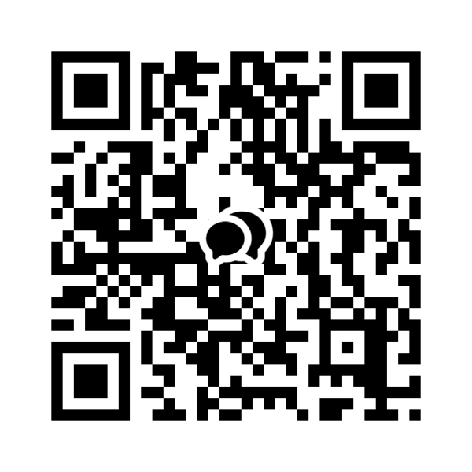

Letters
편지함
막혔을 때, 묻고 싶을 때. 정답을 약속드릴 수는 없지만, 같이 한 번 생각해 볼 수는 있습니다.
환영하는 질문들
이런 이야기, 좋아합니다
정해진 카테고리는 없습니다. 다만 자주 받았던 질문들을 적어두면 본인 상황을 비춰보기 쉬울 것 같아서요.
- 커리어 — 개발자로 직군을 바꿔 보려는데 어디서부터 시작해야 할지 막막할 때
- 앱 출시 — 아이디어는 있는데 설계가 안 떠오를 때, 혹은 막힌 코드 앞에서
- 코드 리뷰 — 내가 쓴 코드가 괜찮은지 봐줄 사람이 없을 때
- 학습 방향 — 책도 보고 강의도 들었는데 늘지 않는 것 같을 때
- 그 외 — 정확히 뭐가 막혔는지 말로 못 풀겠는데, 막혀 있는 게 분명할 때
메모
어떤 질문을 해야 할지 모르겠다고 미루지 마세요. ‘질문이 정리되지 않았다’는 그 상태부터 함께 풀어 볼 수 있습니다.
Before you write
편지 전에, 여기서 먼저 풀릴 수도 있어요
자주 오는 이야기들은 이미 글로 정리해 두었습니다. 읽고도 안 풀린 채로 오는 편지가 훨씬 좋은 편지예요 — 어디까지 해봤는지가 이미 담겨 있으니까요.
“관심은 있는데, 뭘 배워야 할지부터 모르겠습니다.” 첫 말뚝 → “강의를 봐도 ‘이해한 느낌’만 남고, 막상 하려면 손이 안 움직입니다.” 학습 설계 → “AI한테 물어보면 다 나오는데, 정작 제 실력은 안 느는 것 같습니다.” AI 학습 → “매번 새로 시작하는 기분입니다. 배운 게 다음 배움으로 안 이어집니다.” 질문고리 학습 → “만들고 싶은 건 있는데, 첫 줄을 못 쓰고 있습니다.” 직접 만들기 → “출시 직전인데, 뭘 빠뜨렸는지 몰라서 못 누르고 있습니다.” 출시 체크리스트 →내 문장이 하나도 없다면 그대로 편지를 주세요. 없는 문장이 다음에 쓸 글이 됩니다.
How to write
세 줄이면 충분합니다
형식을 갖추라는 뜻이 아닙니다. 이 세 줄이 있으면 답장이 ‘일반론’ 대신 ‘그 상황’으로 갑니다. 그대로 복사해서 채워 보내주세요.
편지 틀
- 지금 상태 무엇을 하려다가, 정확히 어디서 멈췄나요. 예시SwiftUI로 할 일 앱을 만들다가 데이터 저장에서 멈췄습니다.
- 시도한 것 이미 해 본 것과, 그때 무슨 일이 생겼는지. 여기가 답장의 대부분을 정합니다. 예시UserDefaults로 해봤는데 목록이 커지니 앱이 느려졌고, CoreData는 튜토리얼을 봐도 무엇부터 해야 할지 모르겠습니다.
- 원하는 결과 이 편지가 잘 풀리면 무엇이 달라져 있길 바라나요. 예시이번 주 안에 앱을 껐다 켜도 목록이 남아 있는 상태로 만들고 싶습니다.
비어 있어도 괜찮습니다
2번이 비어 있다면, ‘아직 아무것도 시도하지 못했다’는 것 자체가 답장에 쓸 정보입니다. 세 줄을 못 채우겠으면 1번만 적어 보내주셔도 됩니다.
Study together
리이오와 함께 공부하기
편지는 혼자 쓰는 일이지만, 막힌 자리를 지나온 사람은 여럿입니다. 빠른 답이 필요하면 편지보다 여기가 낫습니다.

카카오톡 오픈채팅
조용히 구경만 하셔도 좋고, 막힌 문장 하나만 던지고 가셔도 좋습니다. 답이 늦더라도 누군가는 같은 자리를 지나온 적이 있어요.
오픈채팅 들어가기 →휴대폰이면 버튼을, 데스크톱이면 QR을 찍어주세요 ·
https://open.kakao.com/o/pkdN2Oli Reach out
편지를 부치는 곳
어디로 보내셔도 좋습니다. 급한 이야기라면 오픈채팅이 더 빠릅니다.
이메일
leeo@kakao.com — 누르면 위 세 줄이 채워진 채로 메일이 열립니다. 길게 쓰고 싶은 이야기는 메일이 좋아요.
GitHub
코드 관련 이야기라면 이슈로 남겨주셔도 좋아요.
답장에 대해 미리 드리는 말
기대할 수 있는 것과 그렇지 않은 것을 적어둡니다. 기다리는 쪽이 답답하지 않도록요.
합니다
- 3~5일 안에 한 번은 답합니다. 그 안에 답이 없으면 다시 보내주세요 — 놓친 겁니다.
- 정답 대신 다음 한 걸음을 드립니다. 오늘 해볼 수 있는 크기로요.
- 모르는 건 모른다고 씁니다. 대신 어디를 뒤져야 할지는 같이 찾습니다.
- 여러 분이 같은 곳에서 막혔다면, 그 답장은 익명으로 다듬어 글로 남깁니다.
하지 않습니다
- 과제나 프로젝트를 대신 만들어 드리는 일
- 취업 알선이나 추천서 — 대신 무엇을 준비할지는 같이 봅니다.
- 코드 전체를 대신 디버깅하는 일. 재현되는 한 조각으로 줄여 보내주세요.
- 즉답. 실시간으로 물어야 하는 일은 오픈채팅이 맞습니다.
글로 남길 때는 이름 · 회사 · 서비스명처럼 알아볼 수 있는 것은 모두 지웁니다. 그래도 공개를 원치 않으시면 편지에 “공개는 원치 않습니다” 한 줄만 적어주세요.